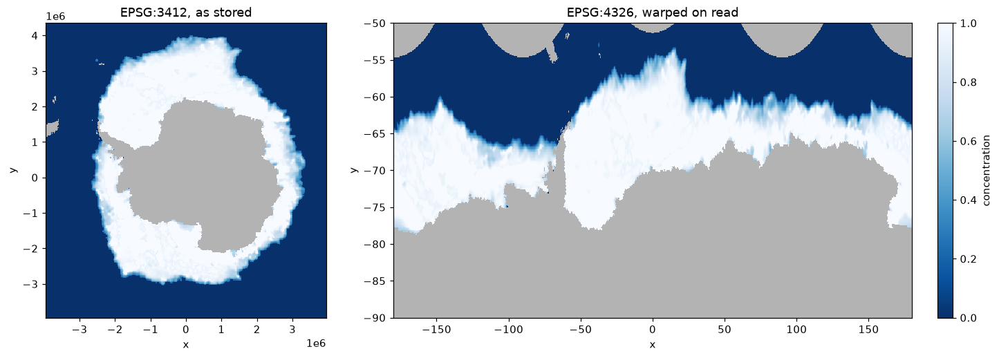
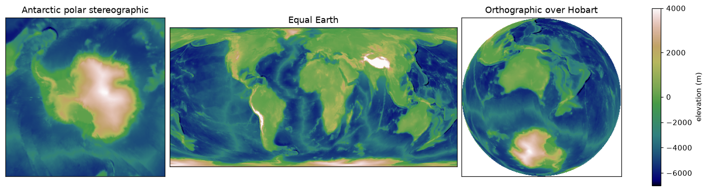

src = xr.open_dataset(seaice, engine="gdalxarray", multidim=False)
src["band_data"].shape, src.xindexes["crs"].crs.to_epsg()((1, 332, 316), 3412)gdalxarray.warp() wraps gdal.Warp(..., format="VRT") and returns the VRT as a string. Nothing is resampled until values are read, and then only for the cells asked for. The recipe is a few kilobytes whatever the size of the source.
One day of Antarctic sea-ice concentration from satellite passive microwave (the NOAA/NSIDC climate data record), on the grid it is published on: 25 km polar stereographic cells on the Hughes 1980 ellipsoid (EPSG:3412, not the WGS84-based EPSG:3031). Land, coast and the pole hole are nodata.
Data: NOAA-NSIDC Climate Data Record of Passive Microwave Sea Ice Concentration Version 6; doi:10.7265/b18j-z797; licence: No constraints on data access or use; day 2025-09-20. Built by scripts/fixtures/make_warp.py; details in docs/fixtures/seaice/provenance.json.
((1, 332, 316), 3412)3524 characters of VRT
<VRTDataset rasterXSize="1440" rasterYSize="320" subClass="VRTWarpedDataset">
<SRS dataAxisToSRSAxisMapping="2,1">GEOGCS["WGS 84",DATUM["WGS_1984",SPHEROID["WGS 84",6378137,298.257223563,AUTHORITY["EPSG","7030"]],AUTHORITY["EPSG","6326"]],PRIMEM["Greenwich",0,AUTHORITY["EPSG","8901"]],UNIT["degree",0.0174532925199433,AUTHORITY["EPSG","9122"]],AXIS["Latitude",NORTH],AXIS["Longitude",EAST],AUTHORITY["EPSG","4326"]]</SRS>
<GeoTransform> -1.8000000000000000e+02, 2.5000000000000000e-01, 0.0000000000000000e+00, -5.0000000000000000e+01, 0.0000000000000000e+00, -1.2500000000000000e-01</GeoTransform>
<Metadata>
<MDI key="AREA_OR_POINT">Area</MDI>
</Metadata>The recipe opens like any other source, in classic mode:
<xarray.DataArray 'band_data' (band: 1, y: 320, x: 1440)> Size: 2MB
[460800 values with dtype=float32]
Coordinates:
* band (band) int64 8B 1
* y (y) float64 3kB -50.06 -50.19 -50.31 ... -89.69 -89.81 -89.94
* x (x) float64 12kB -179.9 -179.6 -179.4 -179.1 ... 179.4 179.6 179.9
* crs int64 8B 0
Indexes:
┌ x RasterIndex (crs=None)
└ y
crs CRSIndex (crs=EPSG:4326)
Attributes:
descriptions: ['sea ice concentration (fraction)'][460800 values with dtype=float32]
array([1])
[320 values with dtype=float64]
[1440 values with dtype=float64]
array(0)
PandasIndex(Index([1], dtype='int64', name='band'))
RasterIndex(crs=None)
AxisAffineTransformIndex(AxisAffineTransform(a=0.25, b=0, c=-179.9, d=0, e=-0.125, f=-50.06, axis=X, dim='x'))
AxisAffineTransformIndex(AxisAffineTransform(a=0.25, b=0, c=-179.9, d=0, e=-0.125, f=-50.06, axis=Y, dim='y'))CRSIndex <Geographic 2D CRS: EPSG:4326> Name: WGS 84 Axis Info [ellipsoidal]: - Lat[north]: Geodetic latitude (degree) - Lon[east]: Geodetic longitude (degree) Area of Use: - undefined Datum: World Geodetic System 1984 - Ellipsoid: WGS 84 - Prime Meridian: Greenwich
fig, axs = plt.subplots(1, 2, figsize=(13, 4.6), layout="constrained",
gridspec_kw=dict(width_ratios=[1, 1.7]))
kw = dict(cmap="Blues_r", vmin=0, vmax=1)
src["band_data"].isel(band=0).plot(ax=axs[0], add_colorbar=False, **kw)
axs[0].set_aspect("equal"); axs[0].set_title("EPSG:3412, as stored")
ll["band_data"].isel(band=0).plot(ax=axs[1], cbar_kwargs={"label": "concentration"}, **kw)
axs[1].set_title("EPSG:4326, warped on read")
for ax in axs:
ax.set_facecolor("0.7")
plt.show()
Target CRS, extent and size are all recipe parameters. Global bathymetry and topography, averaged to half a degree, in three projections, the last centred on Hobart:
Data: GEBCO 2026 Grid; doi:10.5285/4f68d5c7-45eb-f999-e063-7086abc036fa; licence: public domain; acknowledge the source (GEBCO Grid terms of use). Built by scripts/fixtures/make_warp.py; details in docs/fixtures/gebco/provenance.json.
targets = {
"Antarctic polar stereographic": dict(crs="EPSG:3031", bbox=(-4e6, -4e6, 4e6, 4e6), shape=(320, 320)),
"Equal Earth": dict(crs="+proj=eqearth", bbox=(-17.3e6, -8.4e6, 17.3e6, 8.4e6), shape=(500, 243)),
"Orthographic over Hobart": dict(crs="+proj=ortho +lat_0=-42.9 +lon_0=147.3",
bbox=(-6.4e6, -6.4e6, 6.4e6, 6.4e6), shape=(320, 320)),
}
# nodata marks cells outside a projection's domain (GEBCO itself has none)
warped = {k: xr.open_dataset(gdalxarray.warp(gebco, resampling="bilinear", nodata=-32768, **t),
engine="gdalxarray", multidim=False)["band_data"].isel(band=0)
for k, t in targets.items()}fig, axs = plt.subplots(1, 3, figsize=(13, 4.2), layout="constrained",
gridspec_kw=dict(width_ratios=[1, 1.8, 1]))
norm = TwoSlopeNorm(vmin=-7000, vcenter=0, vmax=4000)
for ax, (name, da) in zip(axs, warped.items()):
im = ax.imshow(np.ma.masked_invalid(da.values), cmap="gist_earth", norm=norm)
ax.set_title(name); ax.set_xticks([]); ax.set_yticks([])
fig.colorbar(im, ax=axs, shrink=0.8, label="elevation (m)")
plt.show()
Extra keywords go straight to gdal.WarpOptions, so cutlines, transformer options, geolocation arrays, working type and so on are available. Curvilinear grids uses geoloc=True.
scripts/fixtures/make_warp.py defines target grids over these two sources (lon/lat, WGS84 polar stereographic, Equal Earth, orthographic, and two coarse cases where GDAL reads an overview) and records what gdal.Warp writes for each: into memory, single-threaded, error threshold 0.125. For each case this page compares:
gdalxarray.warp() opened with xarray;gdal.Warp(format="VRT") then ReadAsArray);gdal.Warp into memory with the same settings as the recorded case, using the GDAL this page was built with;gdalxarray must agree with the GDAL VRT on every cell: that is the claim this package makes, that it adds nothing to what GDAL reads. The other two columns are reported, not required. A warped VRT computes each block on its own, so where the approximate transformer struggles (near a pole, say) it can differ from a single direct warp; and GDAL’s resampling kernels can change between releases.
def same(a, b):
return float(np.mean((a == b) | (np.isnan(a) & np.isnan(b)))) if a.dtype.kind == "f" \
else float(np.mean(a == b))
rows = []
for c in man["cases"]:
gt, W, H = c["geotransform"], c["width"], c["height"]
bbox = (gt[0], gt[3] + gt[5] * H, gt[0] + gt[1] * W, gt[3])
pinned_all = np.load(data("warp/" + c["file"]))
for m in c["resampling"]:
kw = dict(crs=c["crs"], bbox=bbox, shape=(W, H), resampling=m,
errorThreshold=c["error_threshold"])
if c["overview"] == "none":
kw["overviewLevel"] = "NONE"
vrt = gdalxarray.warp(data(c["source"]), **kw)
gx = xr.open_dataset(vrt, engine="gdalxarray", multidim=False,
mask_and_scale=False)["band_data"].values[0]
vrt_gdal = gdal.Open(vrt).ReadAsArray()
direct = warp_direct(data(c["source"]), c["crs"], gt, W, H, m, c["overview"])
rows.append({"case": c["name"], "resampling": m,
"gdalxarray = GDAL VRT": same(gx, vrt_gdal),
"GDAL VRT = GDAL direct": same(vrt_gdal, direct),
"GDAL direct = pinned": same(direct, pinned_all[m])})
tab = pd.DataFrame(rows)
tab.style.format("{:.2%}", subset=tab.columns[2:]).hide(axis="index")| case | resampling | gdalxarray = GDAL VRT | GDAL VRT = GDAL direct | GDAL direct = pinned |
|---|---|---|---|---|
| seaice-to-4326 | near | 100.00% | 100.00% | 100.00% |
| seaice-to-4326 | bilinear | 100.00% | 100.00% | 100.00% |
| seaice-to-4326 | cubic | 100.00% | 100.00% | 100.00% |
| seaice-to-3031 | near | 100.00% | 100.00% | 100.00% |
| seaice-to-3031 | bilinear | 100.00% | 100.00% | 100.00% |
| seaice-to-3031 | cubic | 100.00% | 100.00% | 100.00% |
| seaice-to-4326-ovr | near | 100.00% | 100.00% | 100.00% |
| seaice-to-4326-ovr | bilinear | 100.00% | 100.00% | 100.00% |
| seaice-to-4326-ovr | cubic | 100.00% | 100.00% | 100.00% |
| gebco-to-3031 | near | 100.00% | 100.00% | 100.00% |
| gebco-to-3031 | bilinear | 100.00% | 100.00% | 100.00% |
| gebco-to-3031 | cubic | 100.00% | 100.00% | 100.00% |
| gebco-to-eqearth | near | 100.00% | 100.00% | 100.00% |
| gebco-to-eqearth | bilinear | 100.00% | 100.00% | 100.00% |
| gebco-to-eqearth | cubic | 100.00% | 100.00% | 100.00% |
| gebco-to-ortho-hobart | near | 100.00% | 100.00% | 100.00% |
| gebco-to-ortho-hobart | bilinear | 100.00% | 100.00% | 100.00% |
| gebco-to-ortho-hobart | cubic | 100.00% | 100.00% | 100.00% |
| gebco-to-4326-ovr | near | 100.00% | 100.00% | 100.00% |
| gebco-to-4326-ovr | bilinear | 100.00% | 100.00% | 100.00% |
| gebco-to-4326-ovr | cubic | 100.00% | 100.00% | 100.00% |
Pinned oracle from GDAL 3.13.3; this page built with GDAL 3.13.3. gdalxarray matches GDAL’s own read of the VRT in 21 of 21 cases; 21 of 21 direct warps match the pinned oracle exactly.
Rendered with GDAL 3.13.3, xarray 2026.4.1.dev32+g71cfb13ac, numpy 2.5.4, gdalxarray 0.5.1, rasterix 0.2.4.